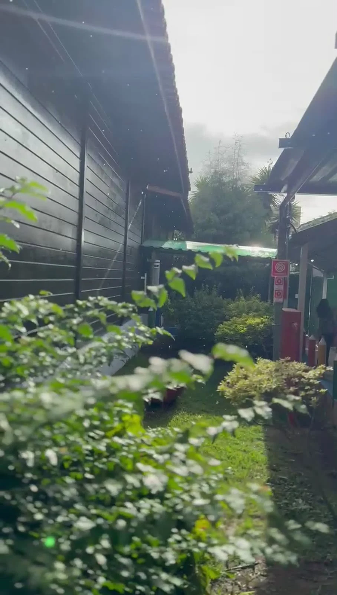
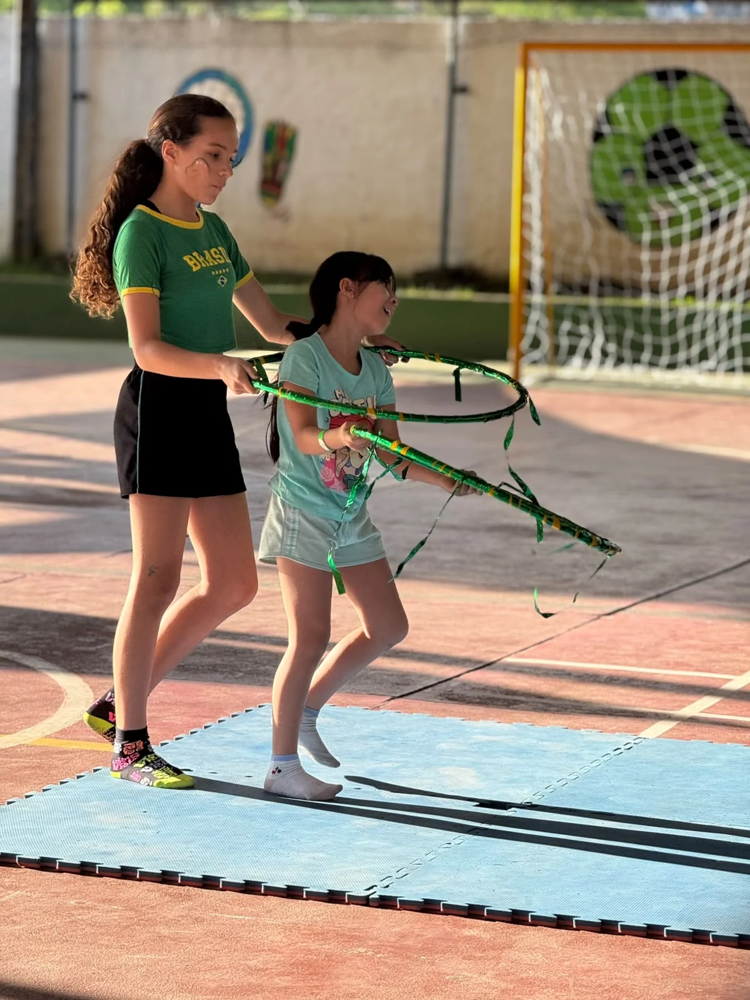
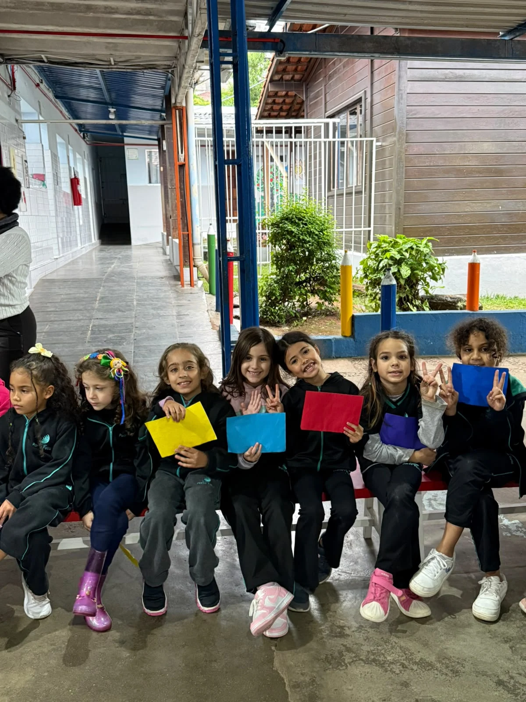
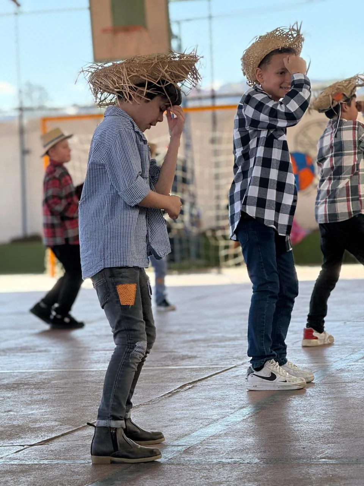
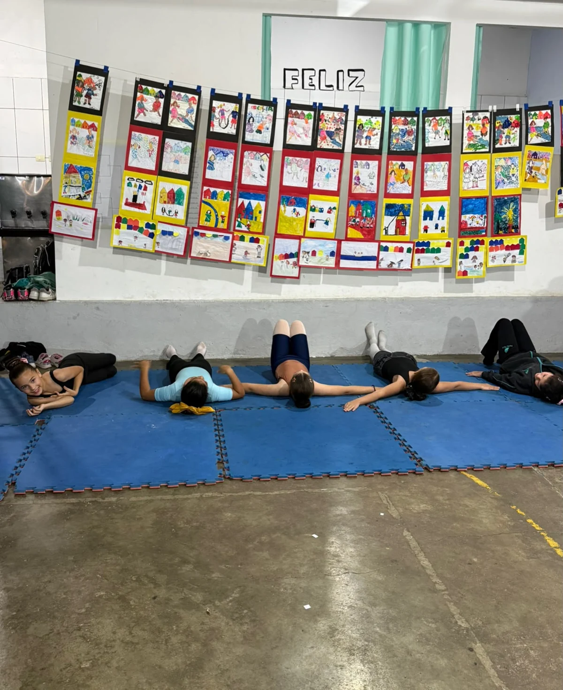
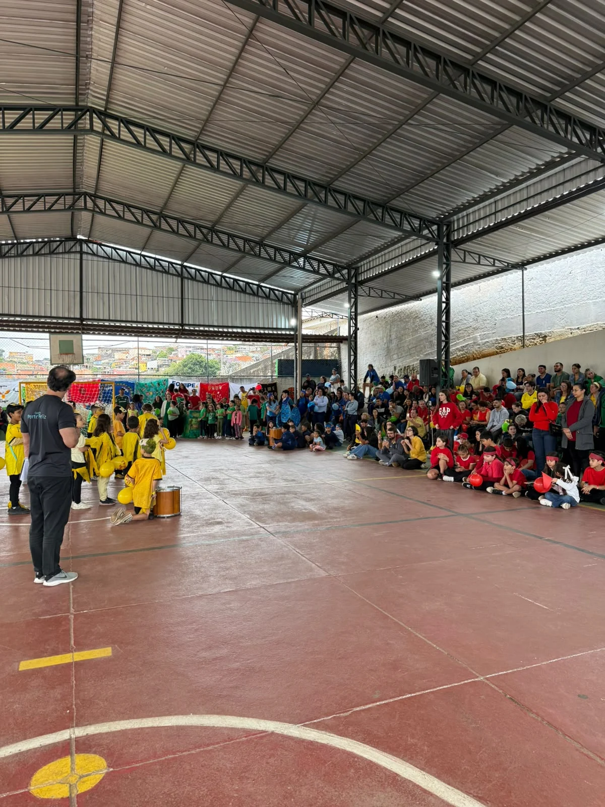
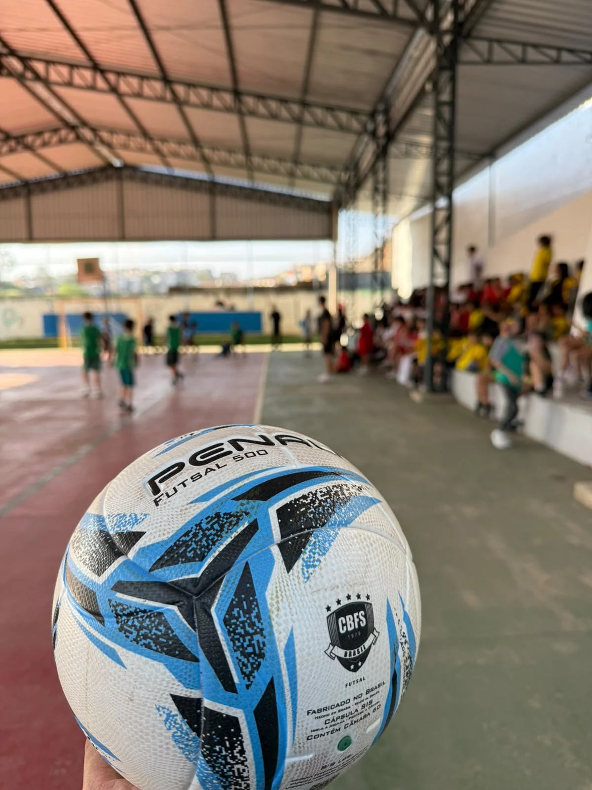
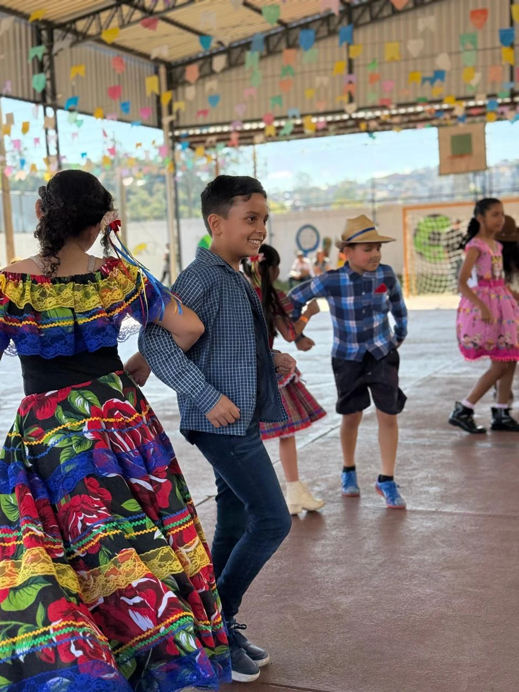
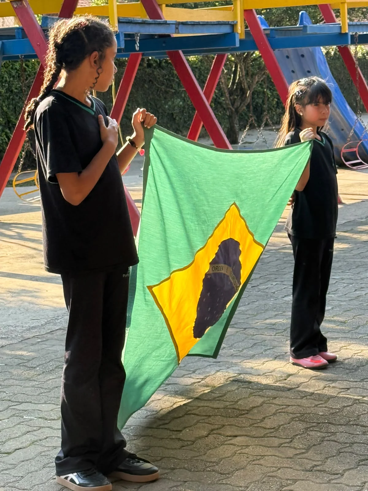

Olhar individualizado
Respeitamos o ritmo e a trajetória de cada estudante.
Acolhimento, respeito e uma educação construída em parceria com as famílias.
Pequenas descobertas. Grandes possibilidades.

Entre, olhe ao redor e descubra nossos espaços no seu ritmo.
Começar o Tour 360° Explore em uma nova aba, no celular ou no computador.Nossa essência
Respeitamos o ritmo e a trajetória de cada estudante.
Um ambiente de respeito às diferenças e pertencimento.
Escola e família acompanham cada conquista.
Desenvolvimento acadêmico, social e emocional.
A vida no Porto Feliz
Descobertas, brincadeiras e momentos para compartilhar.
Aprender, descobrir, crescer
Aprendizagem que respeita o ritmo e as potencialidades de cada estudante.

Um ambiente de descobertas, brincadeiras e desenvolvimento, no qual cada criança é respeitada em seu ritmo de aprendizagem.
Conheça esta etapa
Uma etapa de construção de conhecimentos, autonomia e habilidades essenciais para o desenvolvimento escolar.
Conheça esta etapa
Uma fase de aprofundamento acadêmico, pensamento crítico, responsabilidade e preparação para novos desafios.
Conheça esta etapaAprendizagem em movimento


Nosso espaço, novas descobertas
Um espaço para explorar os ambientes e os momentos do Colégio Porto Feliz.

Entre, olhe ao redor e descubra nossos espaços no seu ritmo.
Começar o Tour 360° Explore em uma nova aba, no celular ou no computador.Expressão, música e momentos compartilhados.
O Colégio Porto Feliz
Educação que acolhe, respeita e transforma.
Pessoas que fazem parte da nossa essência
Uma trajetória construída com dedicação, experiência e amor pela educação.
A história do Colégio Porto Feliz é marcada por dedicação, transformação e, acima de tudo, pelo compromisso de pessoas que sempre acreditaram no poder da educação.
Muito antes de assumirem a direção, Eliana e Márcia já faziam parte da história do colégio, construindo suas trajetórias profissionais dentro da própria instituição e desenvolvendo uma relação de proximidade com os alunos, as famílias e toda a comunidade escolar.
Eliana iniciou sua jornada como professora, dedicando-se ao ensino e à formação de seus alunos. Com o passar dos anos, sua experiência, comprometimento e profundo conhecimento da escola fizeram com que se tornasse uma figura fundamental na instituição, consolidando seu papel como um dos pilares de sua direção.
Márcia também construiu sua trajetória dentro das salas de aula, atuando como professora e, posteriormente, como coordenadora pedagógica. Sua experiência e dedicação ao desenvolvimento educacional a levaram a integrar a direção, ao lado de Eliana, fortalecendo uma parceria construída ao longo dos anos.
Em 2018, essa história ganhou um novo capítulo. Juntas, Eliana e Márcia assumiram a gestão do Colégio Porto Feliz, trazendo consigo não apenas a experiência adquirida ao longo de suas carreiras, mas também o desejo de renovar, inovar e fortalecer a identidade da instituição.
Mais do que uma mudança na direção, aquele momento representou a continuidade de uma história construída por quem já conhecia de perto a essência do colégio, seus desafios, suas conquistas e, principalmente, as pessoas que fazem parte dele.
Desde então, a escola segue em constante evolução, preservando seus valores, fortalecendo os laços com as famílias e buscando proporcionar um ambiente cada vez mais acolhedor, humano e preparado para as novas gerações.
Hoje, o Colégio Porto Feliz reflete uma história de pertencimento, dedicação e transformação. Uma instituição que evolui sem perder suas raízes e que carrega, em cada nova conquista, o compromisso de quem dedicou grande parte de sua trajetória à educação.
Porque, para nós, o futuro da educação também se constrói valorizando as histórias que nos trouxeram até aqui.
Um olhar para cada trajetória
No Colégio Porto Feliz, acreditamos que a educação vai muito além da transmissão de conhecimentos. Para nós, educar é acolher, inspirar e compreender que cada criança e adolescente possui uma identidade única, com seus próprios talentos, sonhos, necessidades e maneiras de aprender.
Nossa filosofia educacional é fundamentada no respeito à individualidade de cada aluno, valorizando suas particularidades e reconhecendo que o desenvolvimento acontece de diferentes formas e em diferentes ritmos. Por isso, buscamos oferecer um ambiente acolhedor, inclusivo e estimulante, onde cada estudante se sinta respeitado, valorizado e encorajado a desenvolver todo o seu potencial.
Aliamos essa essência ao Sistema Positivo de Ensino, que oferece uma proposta pedagógica estruturada, com recursos educacionais que favorecem a construção do conhecimento, o pensamento crítico, a criatividade e a autonomia.
Acreditamos também que a formação de um aluno não se limita ao desempenho acadêmico. Valorizamos o desenvolvimento emocional, social e humano, incentivando princípios como respeito, empatia, responsabilidade e cooperação.
Mais do que ensinar, nosso compromisso é acompanhar cada trajetória de perto, construindo uma relação de confiança entre escola, alunos e famílias.
No Colégio Porto Feliz, cada conquista importa, cada etapa merece atenção e cada aluno tem seu próprio caminho para brilhar.
Colégio Porto Feliz — Educação que acolhe, respeita e transforma.
A educação acontece em parceria
Família e escola, próximas em cada descoberta e conquista.
Vamos conversar

Convivência e participação
Aprender a conviver, respeitar as diferenças e participar da vida em comunidade também faz parte da formação integral.
O que nos guia
Missão, visão e valores: propostas institucionais sujeitas à aprovação da direção.
Uma conversa abre caminhos
Tire suas dúvidas ou agende uma visita.
Rua Maria da Glória e Silva, nº 149
Jardim Nomura — Cotia, SP.
Antes da visita
Conheça a escola em 360°O mapa abre uma busca pelo endereço informado. Confirme a localização antes de se deslocar.